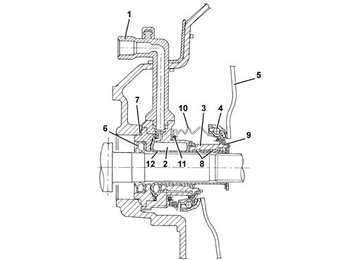
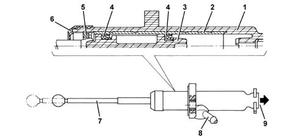
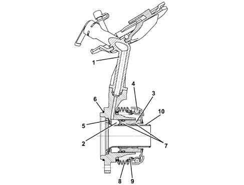

1820B HYDRAULIC CLUTCH SYSTEM
- Path
- Descriptions > 18 CLUTCH > 1820 CLUTCH RELEASE CONTROLS > 1820B HYDRAULIC CLUTCH SYSTEM
- Kind
- system description
- Applies to
- engines: 1.6 TS, 2.0 TS, 1.9 JTD 8V; all production periods
- Interactive page
- https://sloeber94.github.io/elrnDB-a147/en/#/3022459
Applies to: engines: 1.6 TS, 2.0 TS; all production periods
INTRODUCTION
On some versions the clutch release takes place through a co-axial hydraulically operated system known as CSC. This type of system, which incorporates the hydraulic actuator with the thrust bearing, makes it possible to maintain the performance throughout the working life of the clutch and reduce the noise and vibrations from the pedal.
CONSTRUCTION FEATURES
The CSC system is defined as co-axial because the release actuator consists of an aluminium ring cylinder fitted inside the bell housing between the gearbox and the clutch mechanisms in a position which is co-axial in relation to the main shaft.
The advantage of the CSC system compared with traditional systems is that there are no kinematic couplings which results in improved reliability and functionality and make the system easy to maintain. The system has the following features:
- constant adjustment of the clutch pedal height;
- effort applied to the pedal constant over a period of time;
- elimination of clutch pedal return difficulties;
- the noise and vibrations transmitted to the pedal are eliminated through the action of a damper on the cylinder fluid pipe.
- The pipe is connected to the actuator by a rapid connector with a bleed valve incorporated.
- The absence of the relay linkage of the conventional system.
OPERATION
CSC hydraulic actuator cylinder
VIEW OF ASSEMBLY

1 - Fluid inlet pipe 2 - Expansion chamber 3 - Piston 4 - Thrust bearing 5 - Pressure plate springs 6 - Oil seal 7 - O ring 8 - Anti-wear pads 9 - Oil seal 10 - Rubber bellows 11- Spring 12 - Guide tube
The release of the clutch takes place through the action of the clutch pump which sends fluid under pressure, through the pipe (1), to the expansion chamber (2).
The pressure of the fluid causes the movement of the piston (3) which slides in the guide tube (12) by means of the teflon anti-wear pads (8). The piston is in one piece with the thrust bearing (4) which presses against the pressure plate springs (5) disconnecting the clutch. When the pressure of the fluid ceases, the actuator returns to the rest position through the action of the pressure plate springs (5).
There is a gasket (9) on the clutch side and an oil seal (6) and an O ring (7) on the gearbox side to ensure a seal and prevent any leaks of fluid inside the bell housing.
There are rubber bellows (10), kept in position by a spring (11), as protection against the intake of outside agents.
CLUTCH RELEASE PUMP
VIEW OF CLUTCH PUMP

1 - Casing 2 - Steel cylinder 3 - Piston 4 - Gasket 5 - Piston stop fork 6 - Protection 7 - Operating stem 8 - Fluid inlet 9 - CSC actuator fluid supply
The clutch release pump has been designed with the casing and piston made from plastic to reduce the weight and the operating stem secured to the piston. There is a steel cylinder, inside the casing in the area of the piston seals, to prevent wear and distortions due to pressure.
Applies to: engines: 1.9 JTD 8V; all production periods
INTRODUCTION
The clutch release takes place through a co-axial hydraulically operated system known as CSC. This type of system, which incorporates the hydraulic actuator with the thrust bearing, makes it possible to maintain the performance throughout the working life of the clutch and reduce the noise and vibrations from the pedal.
CONSTRUCTION FEATURES
The CSC system is defined as co-axial because the release actuator consists of an aluminium ring cylinder fitted inside the bell housing between the gearbox and the clutch mechanisms in a position which is co-axial in relation to the main shaft.
The advantage of the CSC system compared with traditional systems is that there are no kinematic couplings which results in improved reliability and functionality and make the system easy to maintain. The system has the following features:
- constant adjustment of the clutch pedal height;
- effort applied to the pedal constant over a period of time;
- elimination of clutch pedal return difficulties;
- reduction in the noise and vibrations from the pedal through the action of a damper on the cylinder fluid pipe.
The pipe is connected to the actuator by a rapid connector with a bleed valve incorporated.
The absence of the traditional system idler crank mechanism, the adoption of a clutch pump with a plastic casing and piston and the use of plastics for the construction of the pedal assembly has also made it possible to greatly reduce the noise and the overall weight of the system.
OPERATION
CSC hydraulic actuator cylinder
VIEW OF ASSEMBLY

1 - Fluid inlet pipe 2 - Expansion chamber 3 - Piston 4 - Thrust bearing 5 - Threaded locking flange 6 - O-ring 7 - Anti-wear pads 8 - Rubber mounting 9 - Spring 10 - Guide pipe
The release of the clutch takes place through the action of the clutch pump which sends fluid under pressure, through the pipe (1), to the expansion chamber (2). The pressure of the fluid causes the movement of the piston (3) which slides in the guide tube (10) by means of plastic anti-wear pads (7). The piston is in one piece with the thrust bearing (4) which presses against the pressure plate springs disconnecting the clutch. When the pressure of the fluid ceases, the actuator returns to the rest position through the action of the pressure plate springs.
An oil seal and O-ring (6) prevent gearbox fluid leaking into the clutch housing.
There are rubber bellows (8), kept in position by a spring (9), as protection against the intake of outside agents.
CLUTCH RELEASE PUMP
VIEW OF CLUTCH PUMP
1 - Casing 2 - Steel cylinder 3 - Piston 4 - Gasket 5 - Piston stop fork 6 - Protection 7 - Operating stem 8 - Fluid inlet 9 - CSC actuator fluid supply
The clutch release pump has been designed with the casing and piston made from plastic to reduce the weight; the operating stem secured (T interface) to the piston. There is a steel cylinder, inside the casing in the area of the piston seals, to prevent wear and distortions due to pressure.
The piston is prevented from escaping by a stop V-fork, whilst a protection prevents the build up of dirt inside the cylinder.
The top and bottom end-of-travel stops of the piston in the pump casing also determine the top and bottom end positions of the pedal.